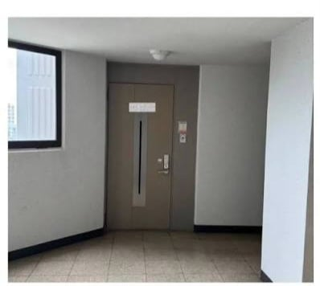

(예시)종종 아파트에서 불법으로 설치하는 전진게이트
근데 전진게이트로 신고했는데
신고하고 나서 접수되었다고 여러번 연락 오는 경우가 있음
보통은 이러면 모르는 일반인들은
"아이 싯팔 공무원새끼들 또 지네들 일 아니라고 뺑뼁이 돌리네"
이렇게 생각하기 십상인데 사실 이는 뺑뺑이가 아님
??? : 그럼 시발아 뺑뺑이가 아니면 뭔데??
여기서 주목해야 할 점은
"이송되었습니다." "지정되었습니다." "접수되었습니다."
하나의 기관에서 접수를 하면 접수되었습니다 나오고
기관이 변경되면 이송되었다 나오고
기관 지정이 완료되면 지정되었습니다가 나옴
저건 처음엔 이송 > "다부처 안전신고"로 지정 > 접수
마지막엔 접수되었다는 알림이 여러개가 온 것
그렇다는건 저 5개 문자는 각각 3개의 기관에서 접수를 했다는 뜻
이해하기 쉽게 풀어쓰자면 소방청에서 접수한게 a부서 > b부서로 이관할때 저런 알림이 오지 않음
근데 접수되었다 알림이 여러번 온다?
예시)
소방청 > 접수 완료
경찰청 > 접수 완료
지자체 > 접수 완료
이는 하나의 기관이 "야 이거 우리 하나로 조지기엔 부족한데?" 싶어서 다른 기관에 협업 요청하고 거기서 "ㅇㅋ 바로감" 사인 준거임
결국 이는 공무원들 일하기 싫어서 뺑뺑이 돌리는게 아니라
공무원들이 각잡고 족치겠다는 다구리 예고장임
그러니 개붕이들이 신고했는데 접수 문자 여러개가 오면
"아 저새낀 레이드 몹이구나" 하고 발뻗고 자면 됨
나머진 공무원 형님들이 알아서 줘패줌
댓글
수집 당시 댓글 11개
시흥교통 · 5 시간 전
너만 오면 ㄱ ㅋㅋㅋㅋㅋㅋㅋㅋㅋㅋㅋㅋ
트루감독슈트 · 4 시간 전
전진게이트가 뭔가했는데 전 과 후 사진 있엇으면 좋앗을듯 아파트 복도에 문을 하나 더 설치해서 개인전용으로 쓴거구나
2224556540 · 4 시간 전
군대로 치면 5부합동검열 이겠네
기아자동차 · 3 시간 전
전진게이트 ㅋㅋㅋㅋㅋ
순라면진한맛 · 3 시간 전
??? : 아 이런 건 제가 아는 형이 잘 패요
영타 · 3 시간 전
저게 근데 어떤 상황에서 불법임? 사진만봐서는 안에 복도처럼 되어있어도 문제가 없을 거 같은데...ㅡ
세이파리 · 3 시간 전
공용공간 소방 안전
영화나봐야지 · 3 시간 전
1. 건축법상 공용 공간의 침범 문제 법이 제한하지 않으면 사람 답게 살 수 없을 정도의 건물에 나와버리니까 엄격하게 면적과 비율을 제한하고 있는데 그 비율을 임의로 무시하고 침범 2. 소방 안전 관리상의 위험 소방관들은 관할 구역내의 건물 도면 같은걸 평소에 분석하고 보관하고 있다가 불나면 그걸 참조해서 진입계획을 세우는데 모르는 철문이 하나 더 있는 거 3. 불법 개조로 인한 안전 문제 발생 위험 공용 공간이니까 당연히 일반 거주 구역과 다르게 설비들이 배치되어 있고 전기 배선 같은 것도 문제됨 4. 구조 안전적인 문제 발생 사실 본문 케이스에는 해당되지 않는건데 벽이나 기둥을 함부로 "추가"하는 것도 위험함. 건물은 평소에도 옆으로 조금씩 흔들리고 이걸 고려해서 설계함. 그런데 계획에 없던 벽이나 기둥이 기존의 구조를 고정시켜 버리면서 기둥이 깨지는 경우도 있음
영타 · 2 시간 전
오....매번 이해안됐었는데 이건 쉽고 확실하게 이해가 되네. 감사!
보노본호 · 1 시간 전
여러가지 부처에서 다 위법으로 판단하여 한번에 조지겠읍니다
싸브레 · 34 분 전
인테리어업체 : 2배 이벤트 개꿀!